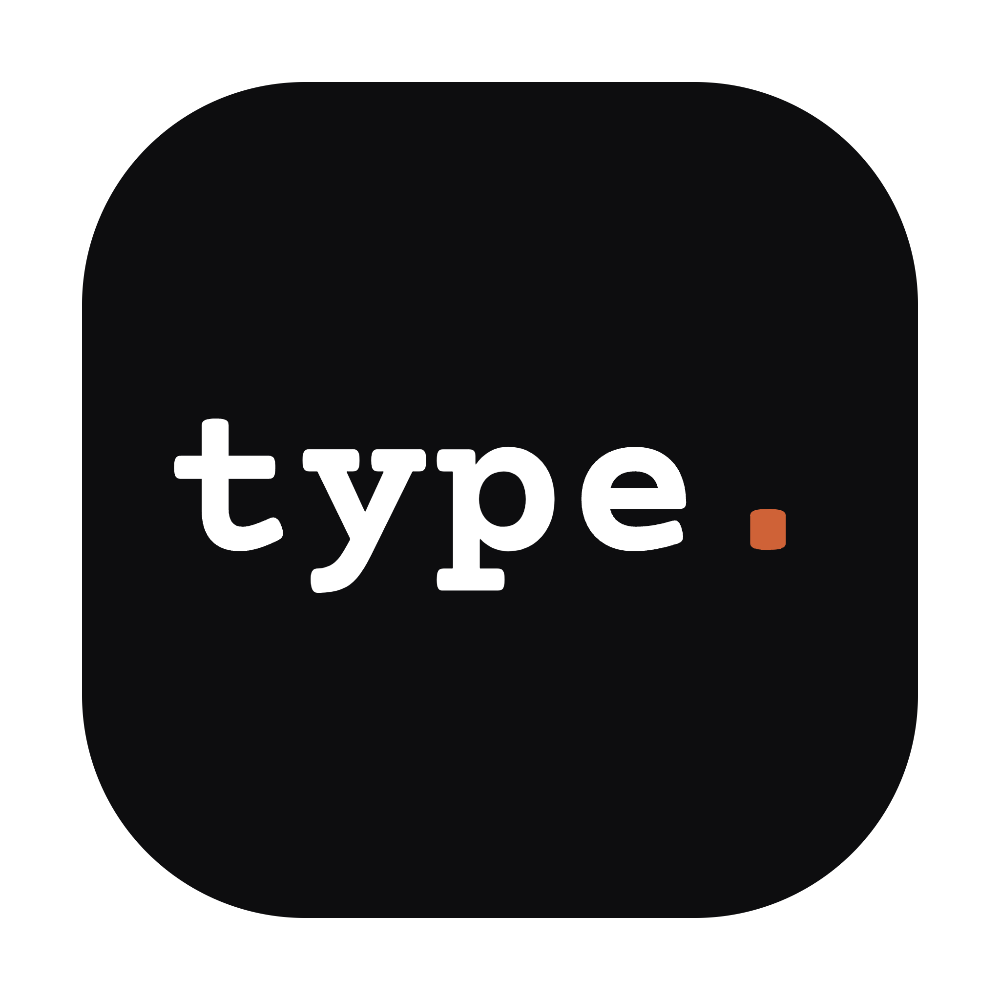

Download for Mac (~170MB)
macOS only. Works on Apple Silicon and Intel.
After downloading
- Open the .dmg and drag "type" into Applications.
- Double-click "type" in Applications. macOS will say it can't verify the developer — click Done.
- Open System Settings → Privacy & Security. Scroll to the bottom. You'll see a line saying "type" was blocked because it is not from an identified developer — click Open Anyway, then confirm.
- Double-click "type" again. It opens — and every time after that, normally.
The app is unsigned, which is why macOS asks the first time. (Faster path if you're comfortable in Terminal: xattr -d com.apple.quarantine /Applications/type.app after step 1 — no System Settings detour needed.) Source is on GitHub.